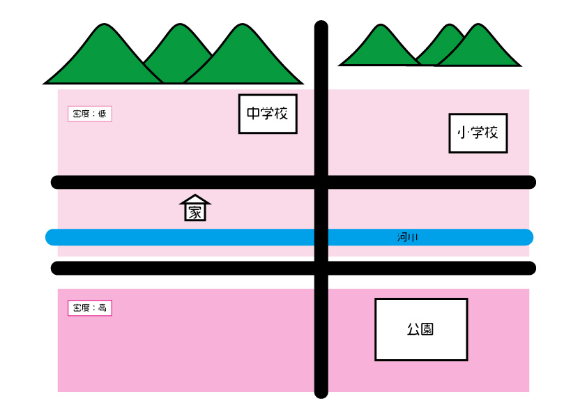

火災の時はどう逃げる？
地震が起こった際、同時に火災も発生することがあります。
このような場合、鎮火が遅れ燃え広がってしまう場合があります。
そんな時避難しなければなりませんが危険な方面に避難してしまったら、
避難した意味がなくなってしまいます。
よって住宅地よりも周りが開けており、燃え移るものが少なそうな場所へ避難するべきです。

※地名は隠してあります。
今回の場合、公園周辺の住宅が密集している地域は火が燃え広がりやすいと考えました。
実際に公園周辺は火災があった場合に燃え広がりやすい地域であること、
学校周辺はそれに比べると燃え広がりにくいことを昔学校で習ったことがあります。
そのため公園に避難するのはあまりお勧めできません。
中学校や小学校に避難するのが良いでしょう。
